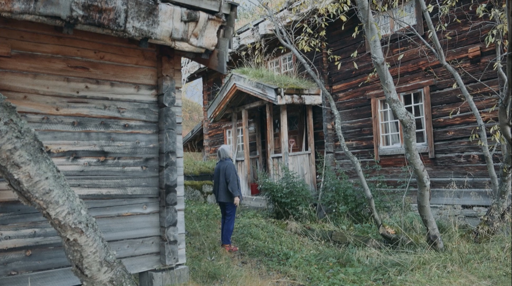
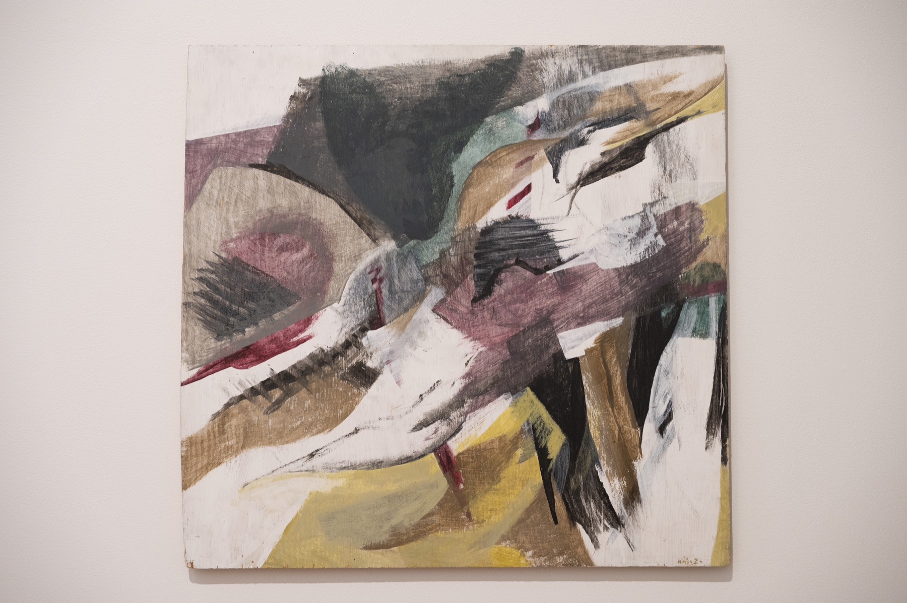

01
Research · exhibitions · publications
Women in the North
Since 2022 Ongoing
A multi-year collaborative thread at Kin Museum of Contemporary Art that foregrounds the conditions, knowledge, and dreams of women in the North. Olga’s contributions move between archival research, encounters, essays, exhibitions, and zines, including The Warmth of the Invisible Sun, devoted to Evgenia Patsia and the Kola North.
Featured publication
View the project
The Warmth of the Invisible Sun Evgenia Patsia and the Kola North

